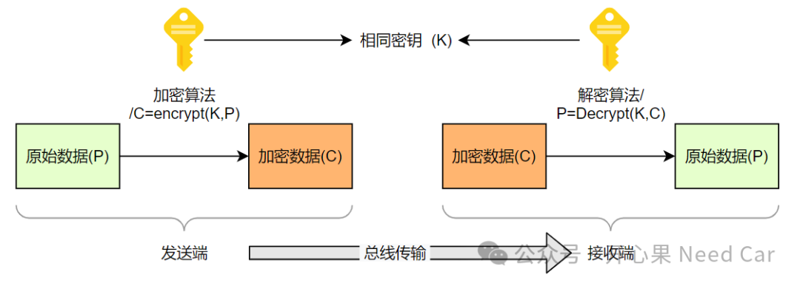
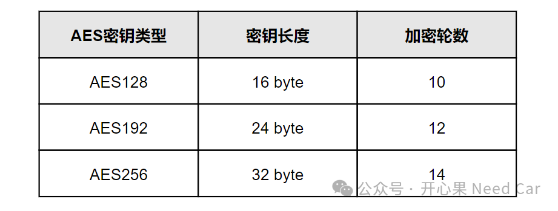
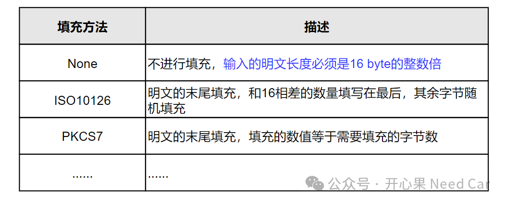
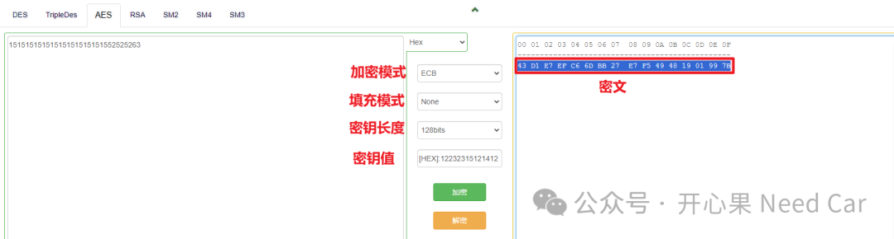
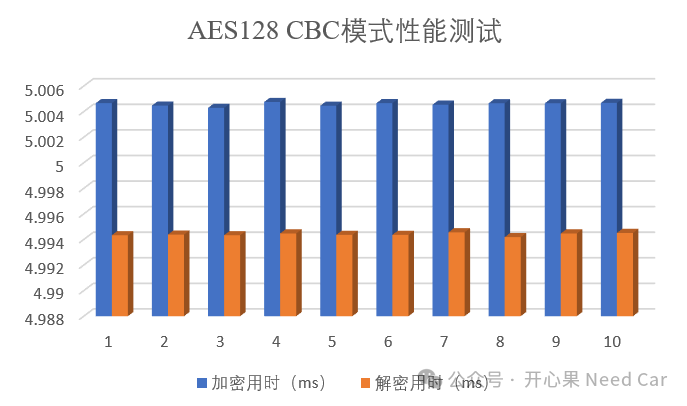
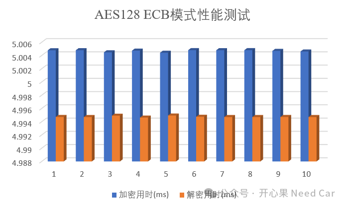

开心果 Need Car · 2024-02-03T17:46:00+08:00 · 微信原文
随着信息安全重视程度的提高，车载MCU级芯片，也在不断地将信息安全算法硬件化，以便于加速信息安全的处理速度。信息安全的算法很多。从大类上说，可分为对称算法和非对称算法。
非对称算法有ECC（Elliptic Curve Cryptography，椭圆曲线密码学）、RSA（Rivest-Shamir-Adleman）等；对称算法有AES（Advanced Encryption Standard，高级加密算法)等。
本文，聊一聊工程中常用的AES算法。基于TC3xx，对AES128加密和解密做一个测试。
1、AES算法原理


2、AES加密模式及填充模式
由于AES算法采用对称分组密码体制，因此，在AES进行数据加密前，需要将明文拆分成固定长度块（16 byte）。如果输入的明文数据长度不是16byte怎么办呢？答：进行填充处理，以此确保每组数据块的长度为16 byte。
常见的填充模式如下：

3、AES128性能测试（硬件）

提示：对于车载MCU开发，原始明文一般以16进制的形式表示。
AES在线计算网址链接：
1、CBC模式测试
基于Tc3xx，使用AES128 CBC模式，填充：None。对32字节明文进行加密、解密操作。

基于Tc3xx，使用AES128 ECB模式，填充：None。对32字节明文进行加密、解密操作。

AES128 ECB模式，加密或者解密32字节用时约5ms，这里的5ms并不能表示硬件的真实计算性能，本文测试中，Host端的计算请求和结果接收放在5ms Task中调度，实际的计算能力要远高如上的量化。
往期精彩回顾
诊断基础：不同会话(Session)，诊断报文如何维持网络状态？
从CAN Transceiver角度，理解两帧网络管理报文唤醒网络的原理